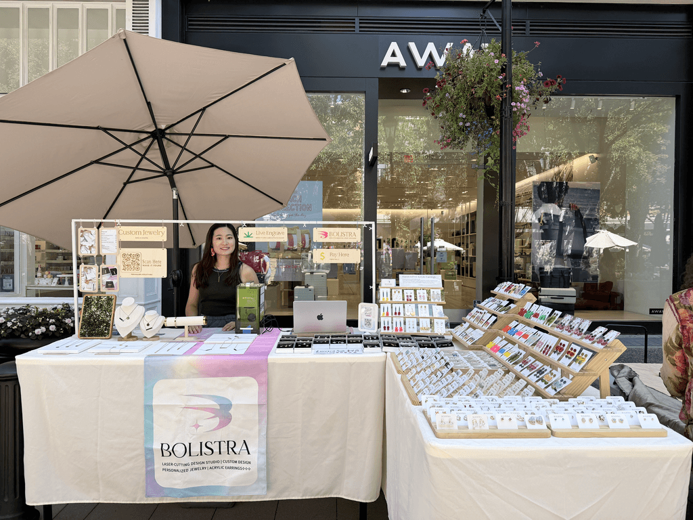
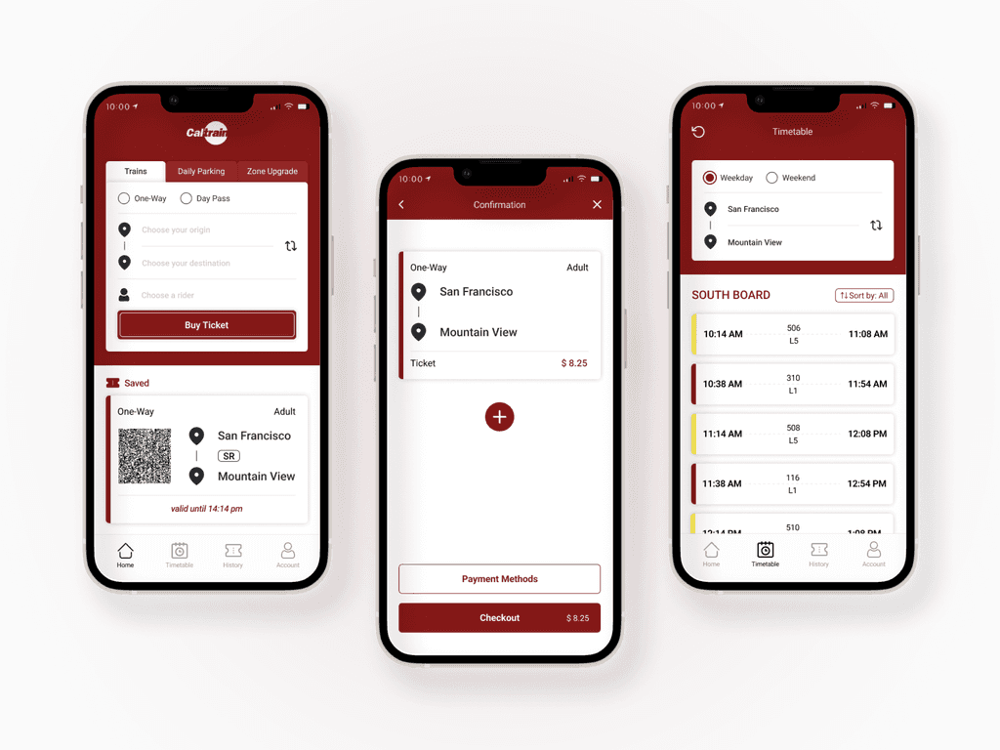

What I've Built

BOLISTRA Jewelry— Building a Jewelry Brand with My Own HandsEnd-to-end brand and product design for my own jewelry startup — from laser-cut prototypes to pop-up market experiences.
 Custom Order Flow— Self-Service Ordering for a Live Booth
Custom Order Flow— Self-Service Ordering for a Live BoothA phone-based order flow that lets customers personalize jewelry on their own, so I can engrave and serve 3–5 customers at once.
 Logo Design Collection— Six Brands, One Designer
Logo Design Collection— Six Brands, One DesignerBrand identity work across jewelry, AI fintech, podcast, and hardware — four actively used by real businesses today.
SF Fleet Week— One Designer, One App, 1.1M AttendeesSolo redesign and full development of a mobile app — from UX and visual design to front-end deployment on iOS and Android.
Boundless Sea & Sky Website Design— A Website That Matches a Big MissionResponsive website design for a nonprofit education organization, from client research and sitemap to live site launch.

Caltrain App Redesign— Getting Commuters on the Train FasterA solo UX redesign simplifying ticket purchase and timetable search, backed by user research and three rounds of iteration.
From Pixels to People —
I craft user-centered solutions with curiosity, clarity, and care, across digital and physical spaces.